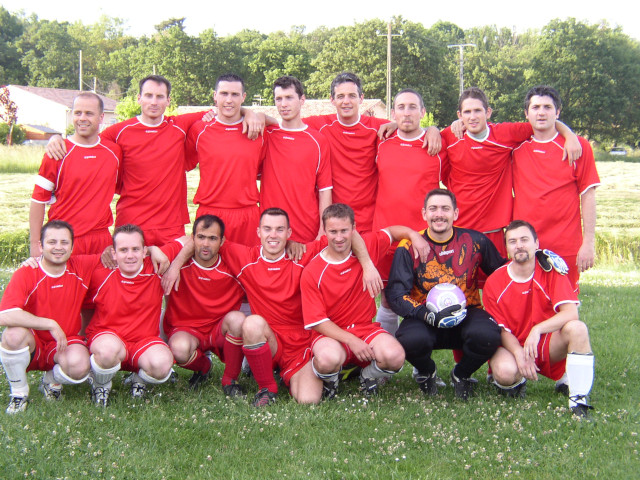
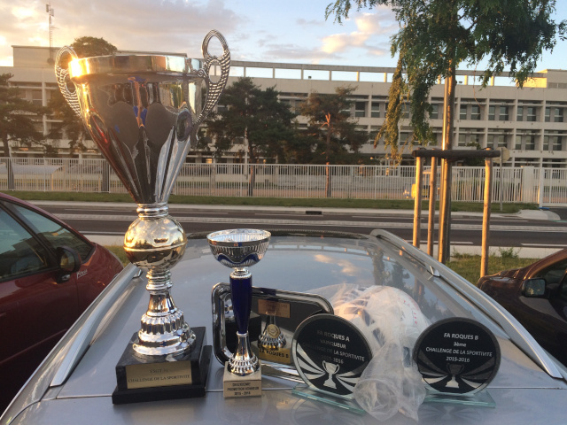
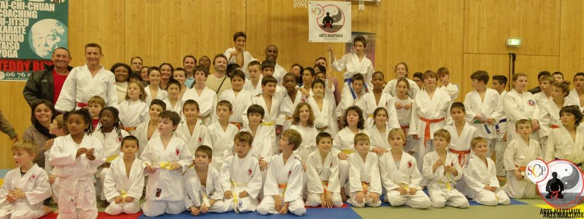
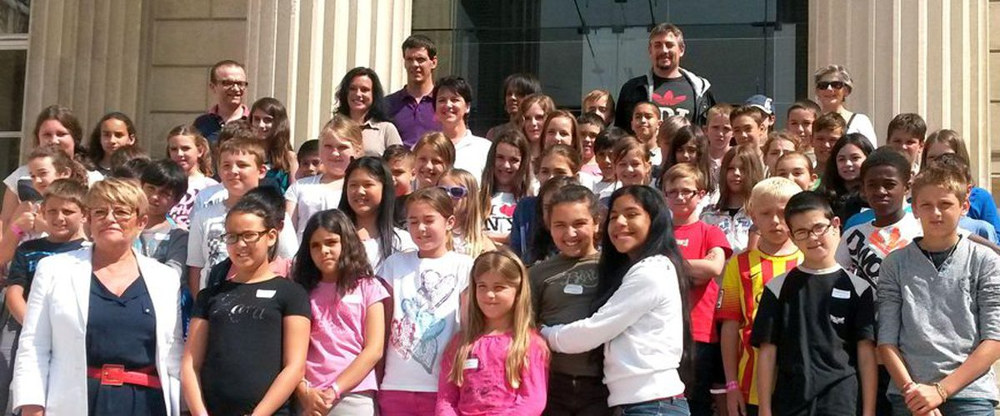

- 2002-08 Musique Avenue FC
J'ai découvert le milieu associatif en me lançant dans l'aventure de la création d'un club de football avec des amis.
Le seul but etait le plaisir de jouer ensemble.
Cela a si bien fonctionné qu'assez vite nous nous sommes retrouvés à gérer 2 équipes et une cinquantaine de licenciés.
 - 2008-17 FA Roques
L'opportunité s'est presenté d'intégrer le club du FA Roques et de créer sa branche FSGT. L'objectif était de proposer
une alternative au football parfois trop tourné vers la competition. Grace aux infrastructures d'une autre dimension,
nous avons pu organiser notamment des tournois, des lotos et vide-greniers afin de faire vivre le club et ses 160 licenciés.
Après une année sportive memorable où nous avons remporté la premiere et la deuxieme place du fair-play régional avec nos
2 équipes, j'ai decidé de raccrocher les crampons et de changer de sport.

Par la même occasion, je suis rentré dans le bureau directeur du club, pour leur faire profiter de mon expérience de dirigeant dans un autre sport. Organisation de compétition et d'évènements (cf.photo : A la rencontre de Teddy RINER), sorties de fin d'année, gestion des licences, des mesures sanitaires et du site web du club ont rythmé ces dernieres années.


C'est aussi par la participation à l'organisation de bourses aux jouets, livres et vêtements, afin d'aidé les plus démunis, que j'ai pu prouver mon engagement aupres de l'association de parents d'élèves ALPE.